SecondLane Access
A platform that lets individuals get into leading private companies before they go public, from a smaller ticket.
Opening soon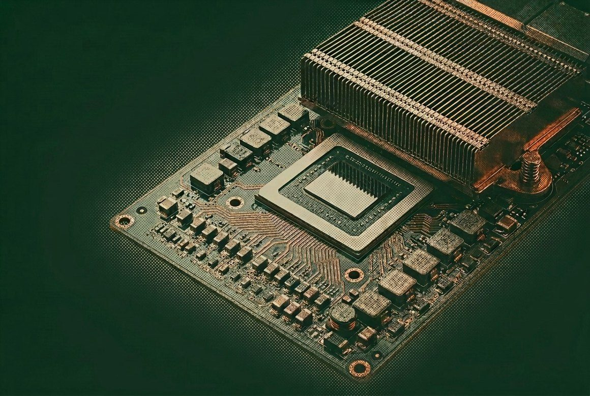
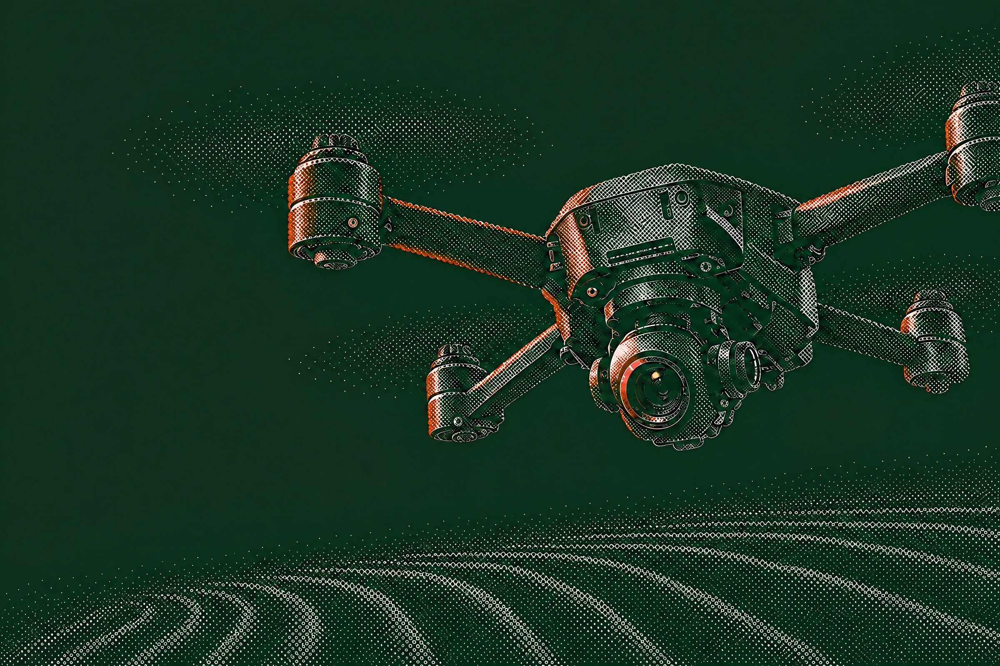
Explore secondary opportunities in Anthropic, Anduril and the private markets' fastest-growing names, across AI, defense and space.
SecondLane is an introduction network and is not a registered broker-dealer in the United States.
At SecondLane we cover the whole lifecycle: raising capital, releasing liquidity, planning the handover, and what comes after.
Access to secondary market opportunities for funds and family offices, founders, qualified participants and partners.
Turn liquidity into AUM growth. Access the secondary market to return capital sooner, redeploy faster and support your next fundraise, from private equity secondaries to token interests.
See how funds use PrimeDon't wait for the IPO. Access Anthropic, OpenAI, Anduril and other category-defining companies while growth is still private. Institutional diligence, real opportunity valuation and clean completion come as standard.
Join the Access waitlistKeep the people who built it. Afford the people you need next. Compliant tender offers and employee liquidity programs turn ownership interest into cash, ease sell pressure, broaden your participant base and help you stay private longer.
See founder liquidityAdd a revenue line without building a desk. Give your clients access to pre-IPO private company interest in hard-to-reach names, and earn on every opportunity. One API for opportunity valuation, private market data and completion.
Talk to partnerships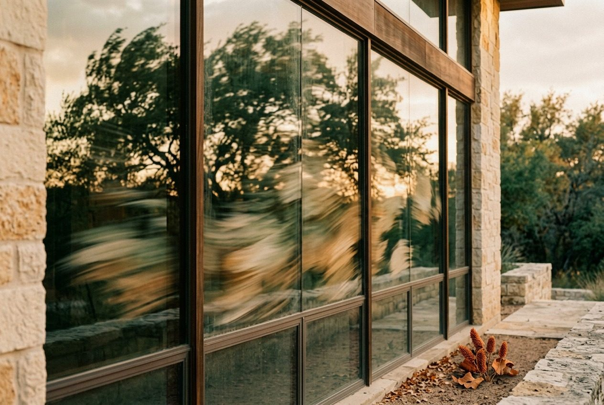
Sign up for our monthly private markets report: volumes, valuations, premiums and discounts, rounds, opportunity maturities, opportunity valuation spreads, and what they mean.
Three verticals connect our participants and founders to private market opportunities. Get in early, build at scale or move a position on. Choose the vertical that fits how you participate.
A platform that lets individuals get into leading private companies before they go public, from a smaller ticket.
Opening soon
Our institutional arm. Positions handled end to end, by one dedicated team that structures and manages each one around your mandate, for institutions, family offices and high-net-worth individuals.
Institutions · Family offices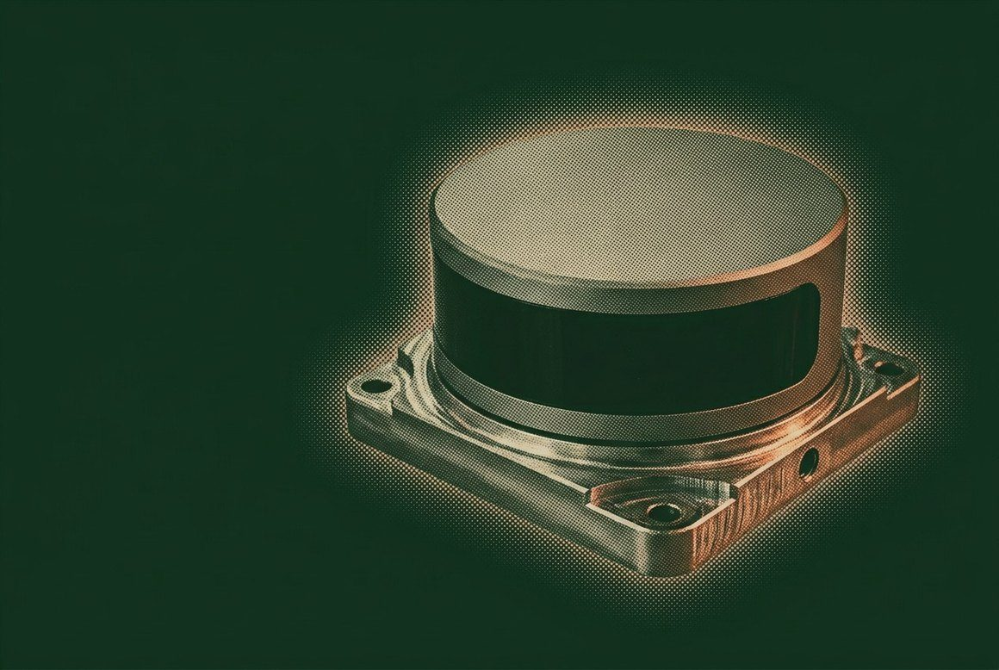
Our multi-asset introductory network. Whether you are entering a private company or exiting a position, we connect you directly with existing holders and interested parties across private company interests.
Entering or exiting a position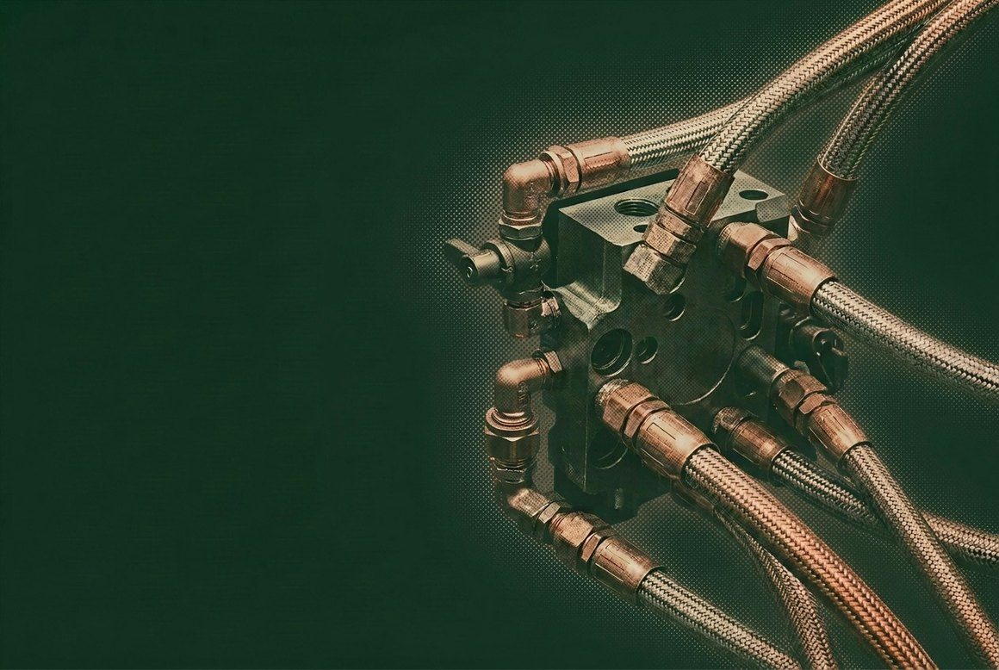
Led by operators from Tier 1 finance, digital assets and energy, we are powering the next generation of private markets, turning decades of experience into bespoke liquidity solutions across secondaries.
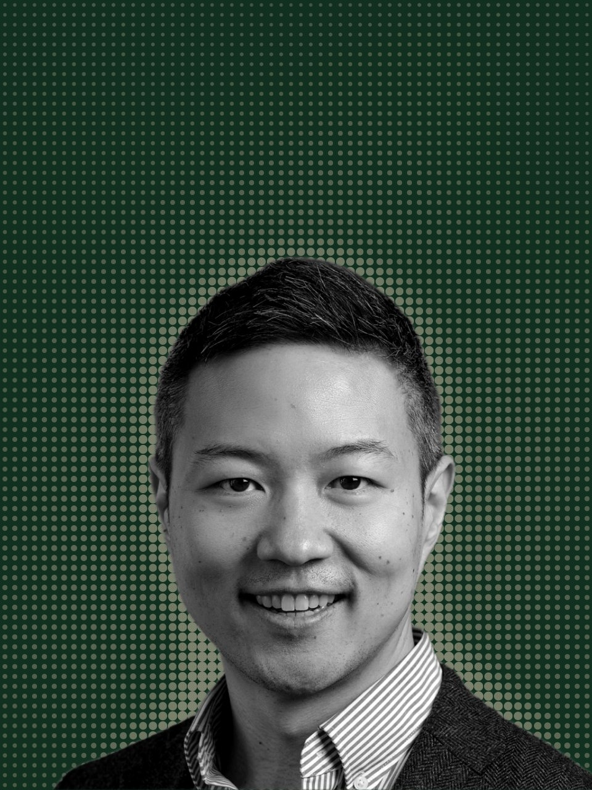
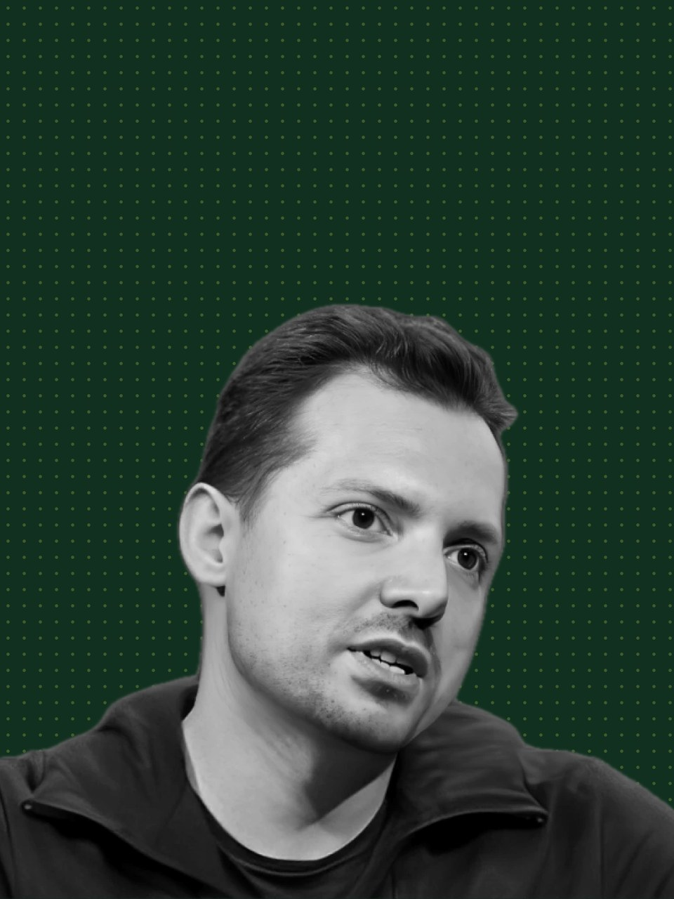
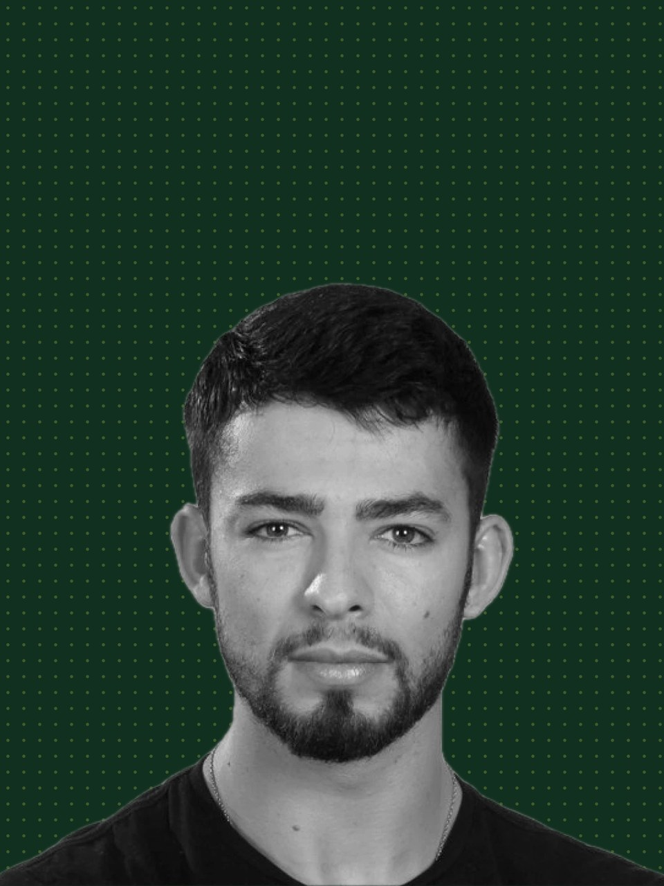
Explore what's moving in private markets, and why. Trends, expert takes and the numbers behind the opportunities.
What the third quarter told us about premiums and discounts.
Report · [Date]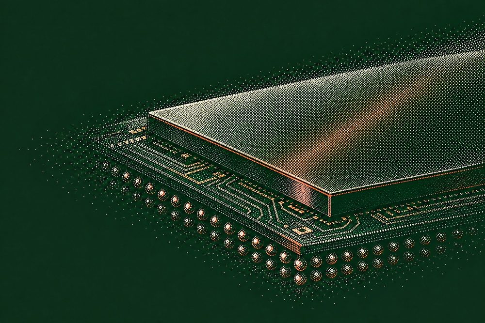
Founders are planning employee liquidity around the round, not after it.
Analysis · [Date]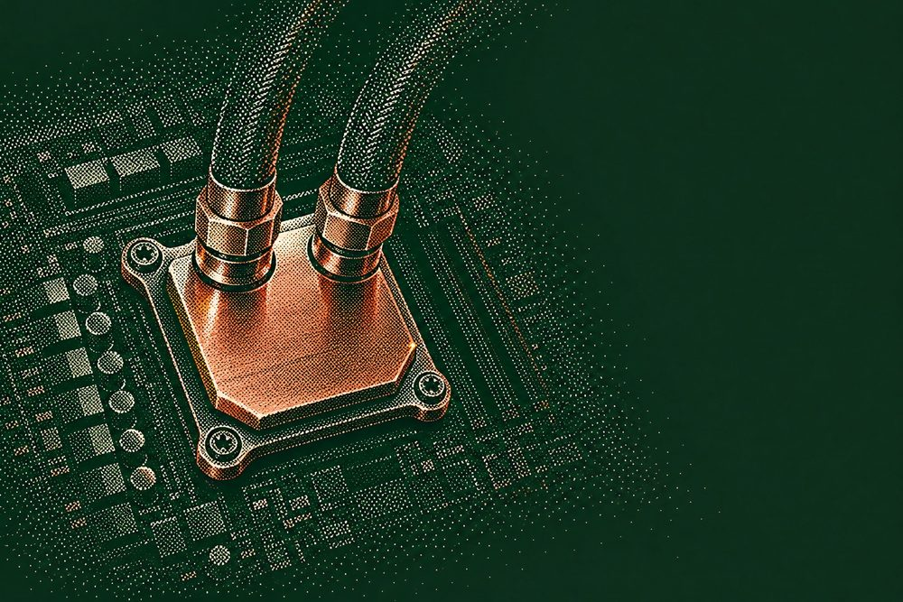
Where qualified participants looked first this month.
Market note · [Date]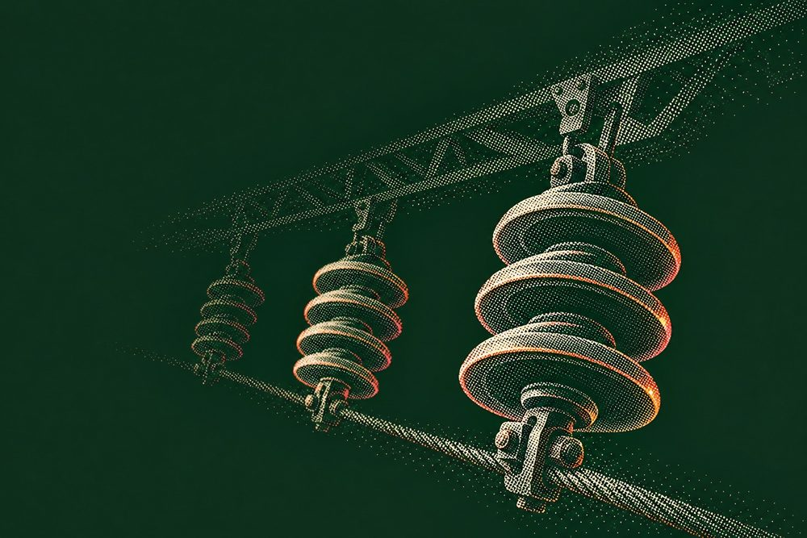
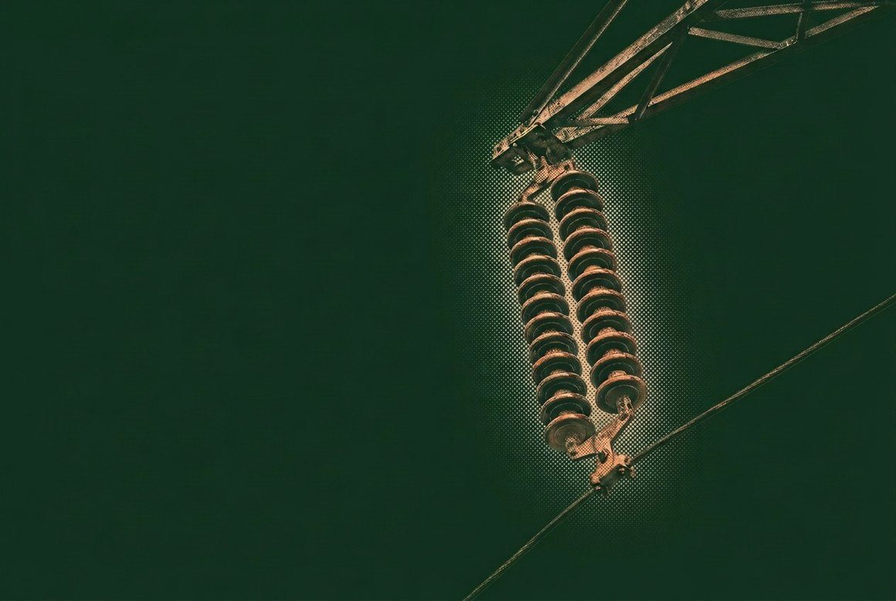
Explore secondary opportunities before they list, or get introduced to interested parties before the window closes.